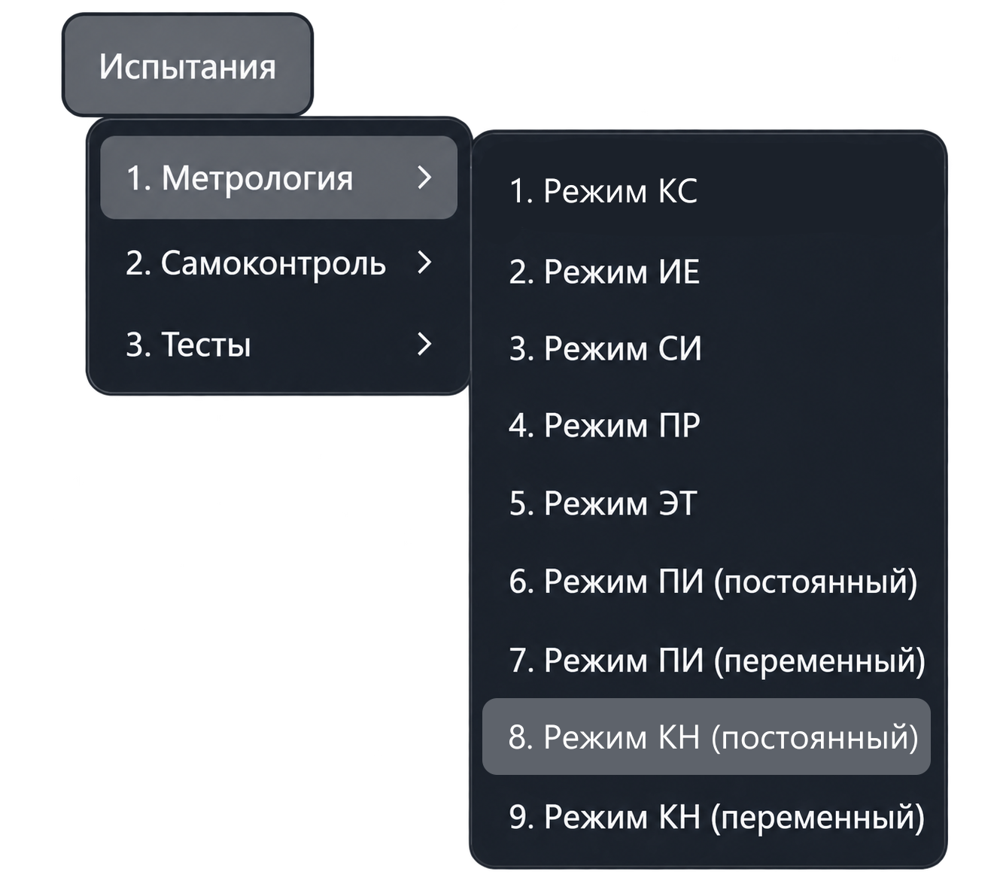
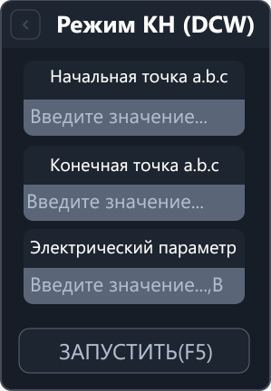
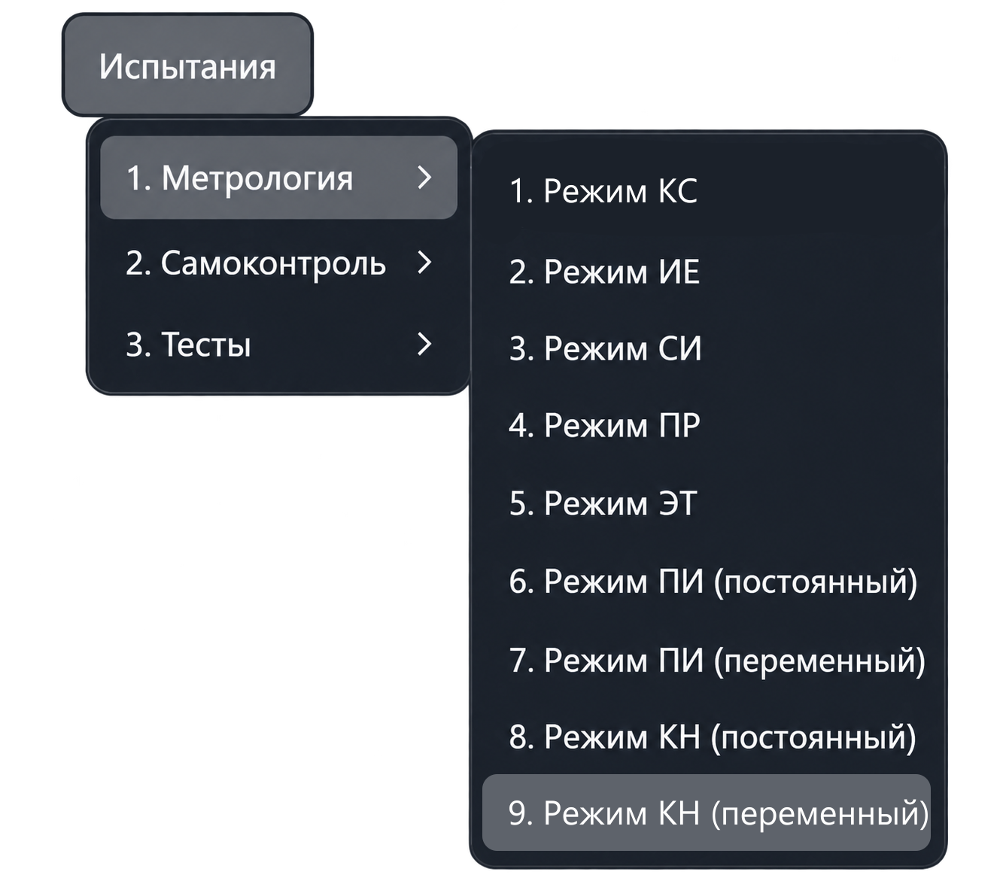
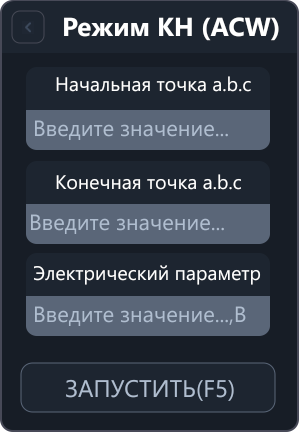

Режим КН
Режим КН проверяет измерение напряжения мультиметром системы. Приложение сравнивает его показание с показанием эталонного вольтметра, которое пользователь вводит по запросу, и рассчитывает погрешность.
В меню предусмотрены два варианта: КН (DCW) — постоянное напряжение и КН (ACW) — переменное напряжение.
КН (DCW): постоянное напряжение
Откройте «Испытания → Метрология → Режим КН (постоянный)». Команда открывает вкладку «Режим КН (DCW)»; измерение запускается отдельно.


Параметры КН (DCW)
| Поле | Что указать |
|---|---|
| Начальная точка a.b.c | Первую точку подключения источника напряжения и эталонного вольтметра. |
| Конечная точка a.b.c | Вторую точку подключения источника напряжения и эталонного вольтметра. |
| Электрический параметр | Ожидаемое значение постоянного напряжения в вольтах (В). |
В адресе a.b.c указываются номер шасси, номер модуля коммутации и номер точки.
Порядок работы
- Подключите источник постоянного напряжения и эталонный вольтметр к выбранным точкам.
- Задайте напряжение на внешнем источнике, введите точки подключения и ожидаемое напряжение в поле «Электрический параметр».
- Нажмите «Запустить» или F5 в активной вкладке режима.
- По запросу приложения введите фактическое показание эталонного вольтметра в вольтах.
- Дождитесь измерения мультиметром системы и просмотрите результат в протоколе. Для повторения используйте действие повтора в запросе приложения.
Приложение проверяет ввод, подключает аппаратуру, настраивает коммутацию и переводит мультиметр в режим измерения постоянного напряжения.
Поле «Электрический параметр» не управляет внешним источником напряжения. Фактическое показание эталонного прибора вводится отдельно по запросу приложения.
Результаты
- Эталонное напряжение — введённое показание эталонного вольтметра.
- Измеренное напряжение — показание мультиметра системы.
- Погрешность — разность показания мультиметра системы и эталонного напряжения, в вольтах.
Допустимый диапазон рассчитывается по введённому эталонному напряжению. Измеренное мультиметром значение должно находиться между его нижней и верхней границами включительно. Выход за границы отмечается в протоколе.
Если в серии выполнено не менее двух измерений, при завершении выводится сводка максимальной отрицательной и положительной погрешности.
При ошибке параметров или подключения проверьте причину, указанную приложением, перед повторным запуском.
КН (ACW): переменное напряжение
Для измерения переменного напряжения предусмотрен отдельный пункт «Испытания → Метрология → Режим КН (переменный)». Он открывает режим КН (ACW), в котором также используется ввод показания эталонного вольтметра.


Параметры КН (ACW)
| Поле | Что указать |
|---|---|
| Начальная точка a.b.c | Первую точку подключения источника переменного напряжения и эталонного вольтметра. |
| Конечная точка a.b.c | Вторую точку подключения источника переменного напряжения и эталонного вольтметра. |
| Электрический параметр | Ожидаемое значение переменного напряжения в вольтах (В). |
Порядок работы в КН (ACW)
- Подключите внешний источник переменного напряжения и эталонный вольтметр к выбранным точкам.
- Задайте напряжение на источнике. В панели режима введите точки подключения и ожидаемое напряжение.
- Нажмите «Запустить» или F5 в активной вкладке режима.
- По запросу приложения введите фактическое показание эталонного вольтметра в вольтах.
- Дождитесь измерения мультиметром системы и просмотрите результат в протоколе. Для повторения используйте действие повтора в запросе приложения.
Приложение проверяет ввод, подключает аппаратуру, настраивает коммутацию и переводит мультиметр в режим измерения переменного напряжения. Поле «Электрический параметр» не задаёт напряжение на внешнем источнике.
Допустимый диапазон рассчитывается по введённому показанию эталонного вольтметра. Измеренное мультиметром системы напряжение проверяется по обеим границам включительно. Погрешность — разность показания мультиметра системы и эталонного значения, в вольтах.
Выход за допустимый диапазон отмечается в протоколе. Для серии из двух и более измерений при завершении выводится сводка максимальной отрицательной и положительной погрешности.
Другие режимы описаны в разделе «Меню „Метрология“».